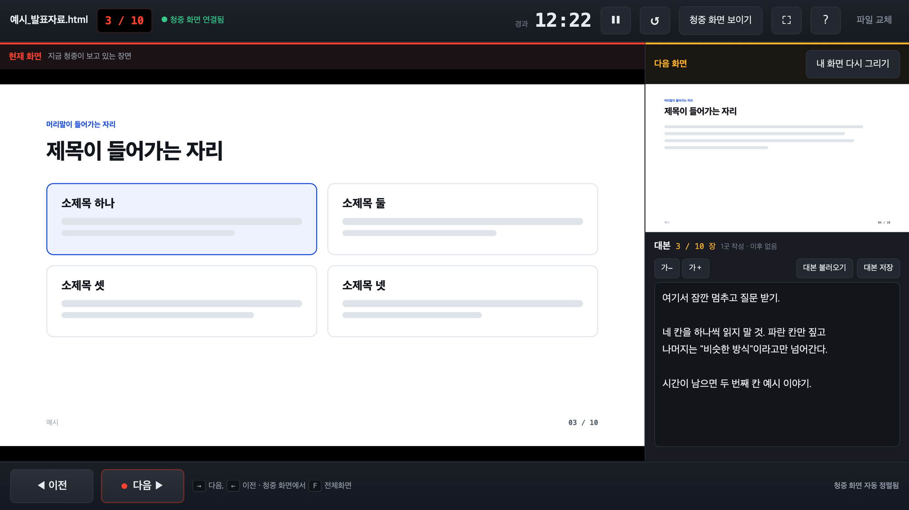
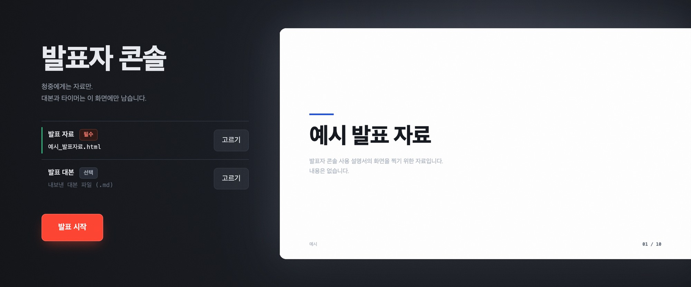
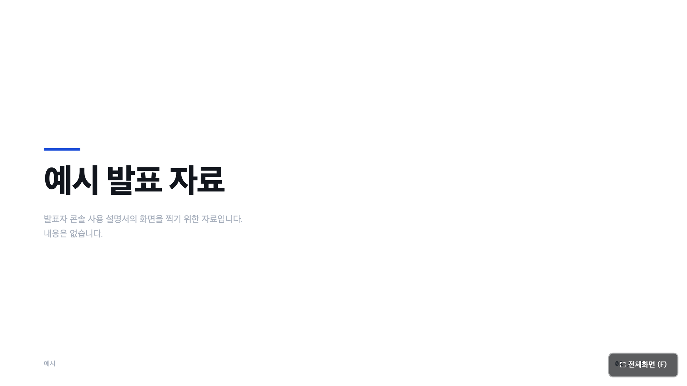
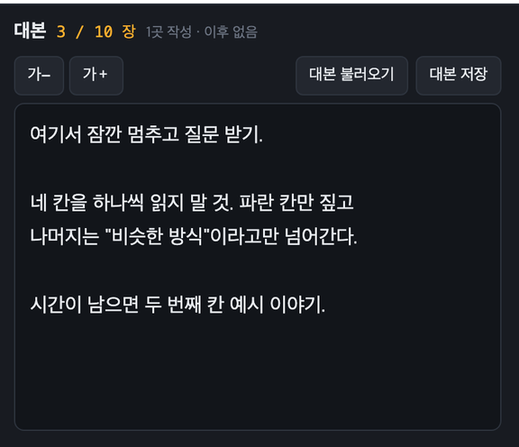

HTML로 만든 발표 자료에 파워포인트의 발표자 보기를 붙입니다. 자료는 한 글자도 고치지 않습니다.

발표 자료 HTML 파일 하나만 있으면 됩니다. 준비에 걸리는 시간은 1분입니다.

어떤 자료가 되나요. 키보드 방향키로 넘어가는 HTML 자료면 됩니다. AI로 만든 자료 대부분이 여기 해당하고, Reveal.js 같은 라이브러리로 만든 것도 됩니다.
안 되는 것. 마우스 클릭으로만 넘어가는 자료, 이미지나 CSS가 별도 파일로 쪼개진 자료입니다. 후자는 자료를 만든 AI에게 "이미지와 CSS를 포함해 단일 HTML로 합쳐줘"라고 요청하면 해결됩니다.
발표 중에는 이 화면만 봅니다. 청중에게는 왼쪽의 큰 화면만 나갑니다.
| 키 | 하는 일 |
|---|---|
| → Space PageDown | 다음 장 |
| ← PageUp | 이전 장 |
| 숫자 + Enter | 그 번호 장으로 바로 가기 |
| F | 전체화면. 청중 화면 창에서 누릅니다 |
| ? | 단축키 목록 열고 닫기 |
발표용 리모컨은 대부분 방향키나 PageUp, PageDown 을 보내므로 따로 설정 없이 그대로 동작합니다.
빔프로젝터를 쓸 때입니다. 여기서 한 가지만 틀리지 않으면 됩니다.
미러링(복제)으로 연결하면 내 대본과 타이머가 청중에게 그대로 보입니다. 맥은 ⌘ Fn F1, 윈도우는 ⊞ P 로 바꿉니다.
화면이 하나로 감지되면 청중 화면을 열 때 도구가 먼저 경고해 줍니다. 그 경고가 떴다면 아직 미러링 상태입니다.

줌이나 구글 밋도 같은 방식이고 3번만 다릅니다. 화면 공유에서 전체 화면 공유가 아니라 창 공유를 고르고, 제목이 [청중 화면] 으로 시작하는 창을 선택하세요. 전체 화면을 공유하면 대본이 그대로 나갑니다.
장마다 할 말을 적어둘 수 있습니다. 적는 즉시 저장되므로 저장 버튼은 없습니다.
오른쪽 아래 대본 칸에 그냥 쓰면 됩니다. 장을 넘기면 그 장의 대본으로 바뀌고, 아래에는 다음 장 대본이 미리 보입니다. 글씨가 작으면 가+ 로 키우세요. 강의장 뒤에서도 보이도록 다섯 단계까지 커집니다.
대본 칸에 커서가 있는 동안에는 방향키가 슬라이드를 넘기지 않습니다. 글자가 그대로 입력됩니다. 넘기려면 대본 칸 밖을 한 번 클릭하세요.

같은 브라우저로 다시 들어오면 시작 화면에 지난 발표 이어서 열기 버튼이 생깁니다. 누르면 마지막에 쓴 자료가 그대로 복원되고, 써 둔 대본도 함께 붙습니다. 아주 큰 자료는 저장되지 않아 이 버튼이 안 뜰 수 있습니다. 그때는 파일을 다시 고르면 됩니다.
대본은 지금 쓰는 브라우저 안에 저장됩니다. 편하지만 다른 PC로는 따라가지 않습니다. 발표를 마쳤거나 다른 자리에서 또 쓸 자료라면 대본 저장 을 눌러 파일로 내려받아 두세요. 다음에 대본 불러오기 로 넣으면 됩니다.
자료를 고쳐도 대본은 따라옵니다. 대본은 장 번호가 아니라 그 장의 내용에 붙어 있습니다. 그래서 중간에 장을 하나 끼워 넣어도 대본이 한 칸씩 밀리지 않습니다.
내용을 너무 많이 바꿔서 자리를 못 찾은 대본은 사라지지 않고 자리를 못 찾은 대본 함에 모입니다. 거기서 원하는 장에 다시 붙일 수 있습니다.
청중 화면이 새 탭으로 열립니다
팝업이 차단된 경우입니다. 주소창 오른쪽 팝업 아이콘에서 항상 허용을 고르고 청중 화면 열기를 다시 누르세요.
넘김 버튼을 눌러도 자료가 안 넘어갑니다
키보드를 지원하지 않는 자료입니다. 자료를 만든 AI에게 "방향키로 슬라이드가 넘어가게 해줘"라고 요청하세요. 도구가 이 상황을 감지하면 같은 안내를 화면에 띄웁니다.
청중 화면이 내 화면과 어긋났습니다
위치를 읽을 수 있는 자료면 1~2초 안에 저절로 맞춰집니다. 그렇지 않은 자료는 화면 오른쪽 아래 보정 버튼으로 청중 화면만 한 장씩 옮기세요.
이미지가 안 보입니다
이미지가 별도 파일로 분리된 자료입니다. 단일 HTML로 합쳐야 합니다. 이 경우 자료를 열 때 도구가 먼저 알려줍니다.
발표 도중 자료를 바꿔야 합니다
위쪽 파일 교체를 누르거나 새 파일을 끌어다 놓으세요. 청중 화면은 도구가 알아서 닫고 다시 열라는 안내를 띄웁니다. 청중 화면 열기만 다시 누르면 됩니다.
내 화면만 이상해졌습니다
다음 화면 옆의 내 화면 다시 그리기를 누르세요. 청중 화면은 건드리지 않으므로 발표 중에 눌러도 안전합니다.
발표 자료가 회사 밖으로 나가나요
나가지 않습니다. 파일은 브라우저 안에서만 열리고 어디로도 전송되지 않습니다. 그래서 인터넷이 끊긴 강의장에서도 그대로 동작합니다.
여러 명이 같이 써도 되나요
됩니다. 대본은 각자의 브라우저에 저장되므로 서로 섞이지 않습니다. 계정도 로그인도 없습니다.